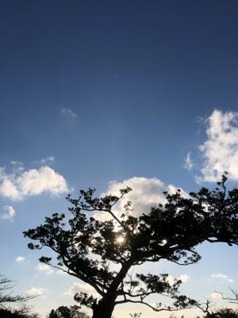

うるがいの話 ある日
最新: ミィヤーン【うるがいの話 ある日】とは 一日だけのプログです
『うるがいの話』の最新一日だけのプログで、通信料が少なく経済的だ。カニの画像をクリックすると全ての日付が載る『うるがいの話』サイトを表示します
|
|
【うるがいの話】 うるがい(ｳﾙｶﾞｲ urugai)とは、『もずくがに』の名前でとても大きくなります。 |
|---|---|
|
|
【カミマヤーの話】 猫のことを方言でマヤーといいます。カミマヤー（kamimayaa）とは、神の猫のことです。 |
|
【たながぁの音楽】 たながぁ（ﾀﾅｶﾞｰtanagaa）とは手長えびのことで、何種類かあり大きいのは車 エビぐらいになります。 |

|
【ぶながぁの話】 ぶながー(bunagaa)とは、赤い髪の毛、赤い身体、そして身長は１ｍ２０ｃｍ ぐらい、川の蟹を食べているの目撃された。場所は沖縄県国頭郡大宜味村のと ある村僕の隣近所に住んでいる爺さんから、聞いた話です。 |
|
|
【ギーマの話】 ギーマ(giima)とは、山原の里山に咲くスズランに似た、 花を付けます。実は食べられます、 気が付くと口の周りが紫になっています。 |
2022年03月02日 (水）ミィヤーン
15:17

生き物係が、嫁のお母さん家に餌を行くと餌が減っていない。え！、ミィヤー
ンは生きているか？、と「マヤー、マヤー」と声をかける。しばらく経って「
みゃー、みゃー」と鳴き声が聴こえた。お母さんの寝床に居た、生きていた。
喉を撫でてやる、飼い主のお母さんの退院のメドは、まだついていない。
昨日、昼４時ごろスマホに電話が、『以前応募して頂いた、グロヴァレックス
沖縄です』、え！、さて覚えていない『ｃｏｂｏｌの出来る人を捜しているの
ですが、お願いできませんか』、在宅勤務できますか、『ＳＡＰだとできるの
ですが』、スミマセンご遠慮させて下さいとヤンワリ断る。さてどの会社だっ
たっけと昨日ハローワークの求職状態を、無効から有効に変更したばっかりの
サイトにログインして、求職活動の記録を見る。就業場所は沖縄県うるま市！
遠い。いずれにしろ、嫁のお母さんの状況から、副業研修以外の就活活動は休
眠とする。
１５時１２分 ビットコインの総資産 ￥１４、７２５↑